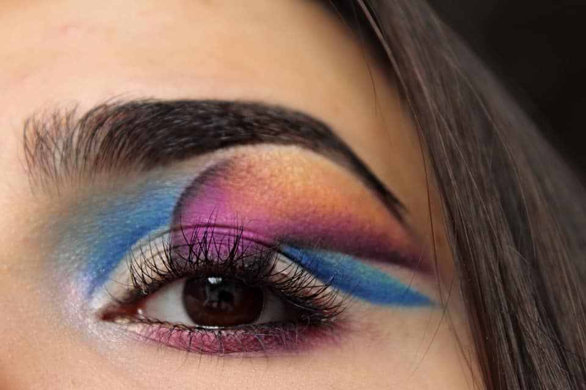

This is a unique double cut crease.First i added a layer of primer on my eye and than set it with a white eyeshadow to make it vibrant.After that i used blue color for the base crease and than carved out the second crease with a concealer.After that i outlined the middle part with black eyeshadow and filled it with pink and violet colors.If you are interested what products i used ,click button to go to a diffrent webpage and view everything clearly.